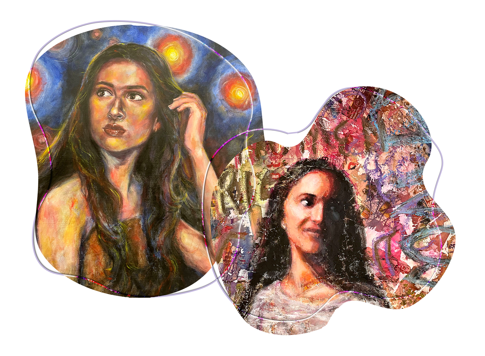

About the Artist
Abigail O’Regan is a painter and printmaker based in Richmond, Virginia. She is currently pursuing a BFA in Painting and Printmaking with a minor in Art History at VCUarts. Her work explores the spiritual and psychological layers of the human experience, using surreal and symbolic imagery to investigate themes of memory, spirituality, and emotional vulnerability.
Working primarily in oil paint and mixed media, Abigail creates atmospheric, dreamlike compositions that merge traditional techniques with speculative narratives. Her paintings often drift into the supernatural, touching on realms like Heaven and Hell, inner hauntings, and metaphysical states, while remaining grounded in deeply personal experiences including food anxiety, ritual, spirituality, love, and grief. These pieces function as both visual allegories and emotional autopsies, bringing to light what is often left unspoken. Conceptually, she draws from philosophy, environmentalism, cultural traditions, and spiritual iconography to create surreal, intimate spaces that illuminate what is typically hidden or unspoken. Her ongoing practice leans into the uncanny, the grotesque, fragility, and mystery as tools for self-inquiry and connection.
Beyond the studio, Abigail is passionate about arts education, research, and curatorial work. She currently serves as a children’s educator at the Valentine Museum and contributes graphic design content for HerCampus magazine. Her work has been featured in student and juried exhibitions and reflects both technical discipline and a fearless commitment to imaginative risk-taking.